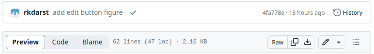
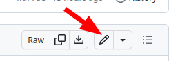
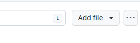
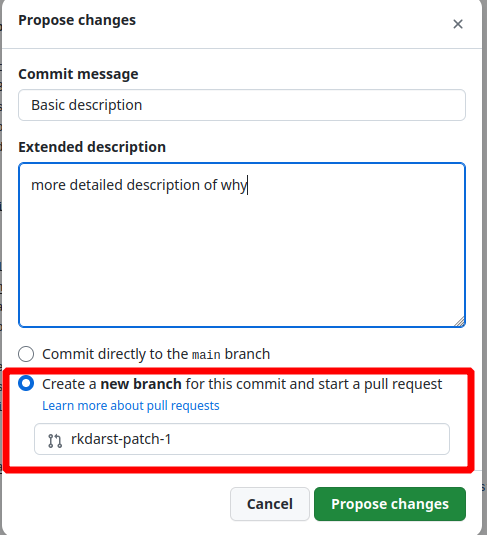

How to use the Github web interface
In this page, we try out Github
Think about:
Does this do something we need?
Is it esay enough to use?
Is it teachable?
View history of a single page
Click the
Edit on GitHubbutton, then findHistoryfrom there. exampleTry clicking
Blame(left side, down a bit). This is not a good term, but shows exactly when each part was changed. exampleClick
Codeor<>to see the raw source. This is what it looks like “under the hood”. example
Most of these buttons found here:

Edit an existing page
From the
Edit on GitHublink, click the ✏ pencil icon above the text (right side, slightly down the page).
Copy some syntax that you can already see, if you want something.
Don’t worry about making mistakes: it might look weird, you can check and see, and try again / ask someone else to take a look.
What if you aren’t sure you got it right? You can take the same option as “outside your organization” and make a pull request - then no changes until reviewed and approved!
Click
Commit ChangesFirst line: rough summary
Extended descritpion: if you want, usually goes about why
The syntax?
This is the Markdown that we talked about before:
You can try it out at the myst-tools sandbox: myst-tools.org/sandbox
Examples:
bold, italics, link
**bold**, **italics**, [link](https://aalto.fi)
Create a new page
First go to the site repository (click
Edit on GitHubon some random page).In the file path, (
github-for-collaboration/content/test-page.md), clickcontent. This shows the view of all pages.
On the right side, a bit down, you can “create new file”
I’d recommend copying the basic structure of an existing file.
Someone outside your organization: edit a page
All the same steps as above.
It won’t let them make a page. Instead, it will offer to “fork this repository and create a pull request”.

Review a change someone else submitted
In the repository, click the
Pull Requeststab. This shows what everyone has done.Examine it
The title and description
There is a whole conversation below that
Anyone can add comments to the discussion.
“Files changed” shows exactly what was changed
“Checks” can validate that the syntax is correct.
What else?
Questions?
Any questions from the audience?
Was this easy enough for simple things?
Are the features worth learning something better enough to do this more easily?